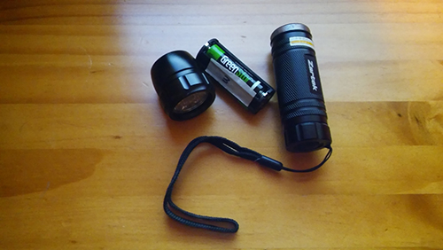
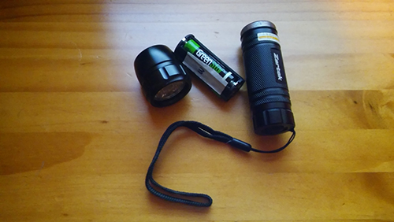

Discovery: Black light
Each part of the blacklight needed to be found in order to unlock the first lock.
Three numbers on each part was writtten on tape and sticked.
Each part of the blacklight needed to be found in order to unlock the first lock.
Three numbers on each part was writtten on tape and sticked.
Piece of a puzzle were scattered accross the room
Assemble the puzzle pieces to get the numbers of next lock
Three number were written on the wall with an infrared pen
Use paper withthree holesand align them so only the three number are seen through the hole
Three timestamps were written on the wall with an infrared pen
Looking at the videoskip to the timestampsand at these specific timestamps three numbers will be hidden
Each side has dots in different colors
Look at numbers not colored inthis will contain the tree puzzles
Calculate the puzzle on the paper
Letters are left outthese letter spell out calculateUsing keywords calculate using letters of alphabeth's index
Align pictures with numbers
Place Nyansapo by N,look at symbols written on wallAlign symbols and use numbersas the code for the lock